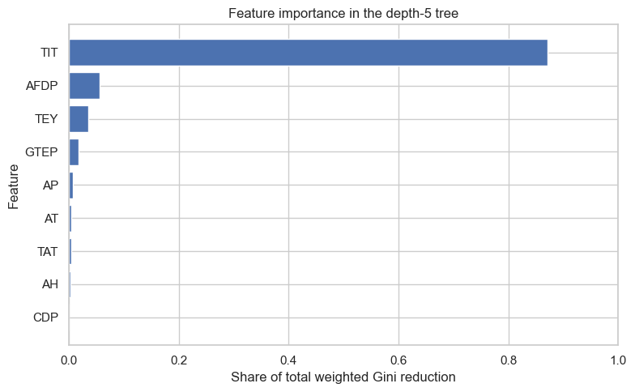

Decision trees from scratch: classifying gas-turbine operating regions
Decision tree is the type of algorithm that generates prediction following a sequence of rules. In this notebook, we will code up a simple decision tree algorithm, to predict whether a gas-turbine operating observation has a high-CO emission.
We will first work through the first two splits using Gini impurity. Then we will turn that logic into a recursive algorithm that can grow a tree to any chosen depth, before comparing it with scikit-learn. The goal is to understand the splitting logic before relying on a library implementation.
What is a decision tree?
A decision tree repeatedly divides the observations into smaller regions. Each division asks a yes-or-no question about one feature—for example, whether turbine inlet temperature (TIT) is below a particular value. A new observation follows the applicable branches until it reaches a final region, called a leaf.
The root is the first question, applied to every observation.
An internal node is a later question that applies only to the observations that reached it.
A leaf makes the final prediction. For binary classification, it can report the fraction of positive-label observations in its region, or assign the majority class.
For this notebook, the binary target is represented by the labels 0 and 1.
1. Set up the classification task
Each row in the dataset records one gas-turbine operating observation. high_co is our binary target. We offer the tree the measured operating quantities, but exclude CO itself because the target was defined from that measurement.
We reserve 30% of the usable observations as a test set. We will build the tree only with the training observations, then check its simple held-out accuracy at the end.
from pathlib import Pathfrom urllib.request import urlretrieveimport matplotlib.pyplot as pltimport numpy as npimport pandas as pdimport seaborn as snsfrom sklearn.model_selection import train_test_splitfrom sklearn.tree import DecisionTreeClassifier, plot_treesns.set_theme(style="whitegrid", context="notebook")DATA_URL = ("https://raw.githubusercontent.com/changyaochen/MECE4520/master/""site/data/gas-turbine-course.csv")candidates = [ Path("../data/gas-turbine-course.csv"), Path("site/data/gas-turbine-course.csv"), Path("gas-turbine-course.csv"),]data_path =next((path for path in candidates if path.exists()), candidates[-1])# In Google Colab, download the small course dataset if it is not already present.ifnot data_path.exists(): urlretrieve(url=DATA_URL, filename=data_path)data = pd.read_csv(filepath_or_buffer=data_path)FEATURES = ["AT", "AP", "AH", "AFDP", "GTEP", "TIT", "TAT", "TEY", "CDP"]TARGET ="high_co"# Keep one complete set of measured features for this first implementation.model_data = data[FEATURES + [TARGET]].dropna().copy()feature_data = model_data[FEATURES]target_labels = model_data[TARGET]# train_test_split accepts its input arrays positionally: features first, labels second.X_train, X_test, y_train, y_test = train_test_split( feature_data, target_labels, test_size=0.30, random_state=4520, stratify=target_labels,)print(f"Usable operating observations: {len(model_data):,}")print(f"Training observations: {len(X_train):,}")print(f"Held-out test observations: {len(X_test):,}")print(f"Positive-label fraction in training data: {y_train.mean():.1%}")
Usable operating observations: 35,398
Training observations: 24,778
Held-out test observations: 10,620
Positive-label fraction in training data: 38.8%
2. Measure class mixing with Gini impurity
A tree divides the observations into regions. For a region (R) containing (K) classes, let (p_{R,k}) be the fraction of observations in class (k). The canonical Gini impurity is
\[
G(R) = 1 - \sum_{k=1}^{K} p_{R,k}^{2}.
\]
For our binary target, let (q_R) be the fraction of observations with label 1. The formula becomes
\[
G(R) = 1-q_R^2-(1-q_R)^2 = 2q_R(1-q_R).
\]
It is zero when a region contains only one class, and largest when the two classes are evenly mixed. A classification tree chooses the split that produces the largest reduction in the sample-size-weighted Gini impurity.
def gini_impurity(labels: pd.Series | np.ndarray) ->float:"""Compute binary Gini impurity for one region. Args: labels: Binary labels in the region. Returns: The region's Gini impurity. """ positive_fraction = np.mean(labels)returnfloat(2* positive_fraction * (1- positive_fraction))def region_summary(labels: pd.Series | np.ndarray) ->dict[str, float|int|str]:"""Summarize a region using its observed labels. Args: labels: Binary labels in the region. Returns: Sample count, positive-label fraction, Gini impurity, and majority-class label. """ positive_fraction =float(np.mean(labels))return {"samples": len(labels),"positive-label fraction": positive_fraction,"Gini impurity": gini_impurity(labels=labels),"majority class": 1if positive_fraction >=0.5else0, }pd.DataFrame( data=[region_summary(labels=y_train)], index=["All training observations"],).round(3)
samples
positive-label fraction
Gini impurity
majority class
All training observations
24778
0.388
0.475
0
3. Score one proposed split
Suppose we propose splitting turbine inlet temperature (TIT) at 1076.95 °C. The observations at or below the cutpoint form the left region; the rest form the right region.
The loss after a split is the weighted average of the two child impurities:
Rather than specify one feature and cutpoint ourselves, the tree searches them. For each feature, candidate cutpoints lie halfway between adjacent distinct observed values.
The function below sorts one feature at a time, uses cumulative counts of positive labels, and scores every valid cutpoint. This gives the same greedy search logic as a decision-tree library while keeping the calculation practical for the full training dataset.
def find_best_gini_split( features: pd.DataFrame, labels: pd.Series) ->dict[str, float|int|str]:"""Find the feature and cutpoint with the smallest weighted Gini impurity. Args: features: Candidate feature columns for one parent region. labels: Binary labels for the same observations. Returns: Details of the best valid binary split in the region. """ label_values = labels.to_numpy(dtype=int) n_samples =len(label_values) parent_gini = gini_impurity(labels=label_values) best_split: dict[str, float|int|str] |None=Nonefor feature_name in features.columns: values = features[feature_name].to_numpy() order = np.argsort(values, kind="stable") sorted_values = values[order] sorted_labels = label_values[order]# A candidate cutpoint sits between two distinct adjacent values. left_sizes = np.arange(1, n_samples) right_sizes = n_samples - left_sizes left_positive = np.cumsum(sorted_labels)[:-1] right_positive = sorted_labels.sum() - left_positive valid = sorted_values[:-1] < sorted_values[1:]ifnot valid.any():continue left_fraction = left_positive / left_sizes right_fraction = right_positive / right_sizes left_gini =2* left_fraction * (1- left_fraction) right_gini =2* right_fraction * (1- right_fraction) weighted_gini = ( left_sizes * left_gini + right_sizes * right_gini ) / n_samples candidate_index = np.where(valid, weighted_gini, np.inf).argmin() candidate_gini =float(weighted_gini[candidate_index])if best_split isNoneor candidate_gini < best_split["weighted child Gini"]: best_split = {"feature": feature_name,"threshold": float( (sorted_values[candidate_index] + sorted_values[candidate_index +1]) /2 ),"parent Gini": parent_gini,"weighted child Gini": candidate_gini,"Gini decrease": parent_gini - candidate_gini,"left samples": int(left_sizes[candidate_index]),"right samples": int(right_sizes[candidate_index]), }if best_split isNone:raiseValueError("No split is available for this region.")return best_splitfirst_split = find_best_gini_split(features=X_train, labels=y_train)pd.Series(data=first_split).to_frame(name="best first split")
best first split
feature
TIT
threshold
1076.95
parent Gini
0.475113
weighted child Gini
0.259617
Gini decrease
0.215496
left samples
7648
right samples
17130
5. Choose the second split
After the first split, each child is a candidate for further division. A best-first tree asks which available child split delivers the largest overall reduction in training-set impurity. That requires weighting each child region’s local Gini decrease by the fraction of training observations that reach it.
We inspect this second split manually so the selection logic remains easy to follow. The next section generalizes the same search recursively.
The second split divides the region TIT > 1076.95 using AFDP ≤ 3.510.
6. Build a tree recursively
The same split search can be repeated inside every child region. The recursive function below has one hyperparameter: max_depth, the maximum number of decision rules along any path from the root to a leaf. A value of 0 creates one leaf with no rules; a value of 2 permits up to two rules along a path.
The recursion stops when it reaches the requested depth, when all labels in a region agree, when all feature values in a region are identical, or when no split lowers Gini impurity.
def make_leaf(labels: pd.Series) ->dict[str, float|int|bool]:"""Create a final prediction region. Args: labels: Binary labels in the final region. Returns: A dictionary representing one leaf of the tree. """ positive_fraction =float(np.mean(labels))return {"is_leaf": True,"samples": len(labels),"positive fraction": positive_fraction,"prediction": int(positive_fraction >=0.5), }def build_tree( features: pd.DataFrame, labels: pd.Series, max_depth: int, depth: int=0,) ->dict[str, object]:"""Build a binary classification tree by recursively reducing Gini impurity. Args: features: Candidate feature columns for the current region. labels: Binary labels for the current region. max_depth: Maximum number of decision rules from root to leaf. depth: Number of rules already used to reach the current region. Returns: A nested dictionary representing a decision tree. """ no_feature_variation = features.nunique().eq(1).all()if ( depth >= max_depthor labels.nunique() ==1or no_feature_variation ):return make_leaf(labels=labels) best_split = find_best_gini_split(features=features, labels=labels)if best_split["Gini decrease"] <=0:return make_leaf(labels=labels) split_feature =str(best_split["feature"]) split_threshold =float(best_split["threshold"]) left_mask = features[split_feature] <= split_threshold right_mask =~left_mask positive_fraction =float(np.mean(labels))return {"is_leaf": False,"samples": len(labels),"positive fraction": positive_fraction,"feature": split_feature,"threshold": split_threshold,"left": build_tree( features=features.loc[left_mask], labels=labels.loc[left_mask], max_depth=max_depth, depth=depth +1, ),"right": build_tree( features=features.loc[right_mask], labels=labels.loc[right_mask], max_depth=max_depth, depth=depth +1, ), }def print_tree(node: dict[str, object], indent: str="") ->None:"""Print the decision rules and predictions in a tree. Args: node: Current node or leaf in the nested tree dictionary. indent: Text indentation used to show the tree structure. """ifbool(node["is_leaf"]):print(f"{indent}Predict {node['prediction']} "f"({node['samples']} observations; "f"positive fraction = {node['positive fraction']:.3f})" )return feature =str(node["feature"]) threshold =float(node["threshold"])print(f"{indent}If {feature} ≤ {threshold:.3f}:") print_tree(node=node["left"], indent=indent +" ")print(f"{indent}Otherwise:") print_tree(node=node["right"], indent=indent +" ")scratch_tree = build_tree(features=X_train, labels=y_train, max_depth=2)print_tree(node=scratch_tree)
7. Build the same depth-limited tree with scikit-learn
The scikit-learn decision-tree implementation carries out this search efficiently. Setting max_depth=2 gives it the same depth limit used by our recursive implementation above. We use the same Gini criterion.
print(f"Training accuracy: {sklearn_tree.score(X=X_train, y=y_train):.3f}")print(f"Held-out test accuracy: {sklearn_tree.score(X=X_test, y=y_test):.3f}")
Training accuracy: 0.846
Held-out test accuracy: 0.845
8. Quantify feature importance
The depth-2 tree above is useful for inspecting individual rules, but it contains only a few splits. To make the importance profile richer, we fit a separate tree with max_depth=5. Scikit-learn provides a numerical importance for each feature through the feature_importances_ attribute.
At each split, measure how much the feature makes the child regions less mixed in their labels: the reduction in Gini impurity.
Weight that improvement by the number of observations reaching the split, so a helpful root split matters more than an equally helpful split in a small leaf.
Add these weighted improvements across every split using the same feature, then normalize them so that the importances sum to 1.
A value of 0.70 means that the feature accounts for 70% of this tree’s total weighted Gini reduction. It does not mean that the feature causes 70% of the outcome, or that it accounts for 70% of predictive accuracy. In practice, use held-out performance to choose the tree depth; we use depth 5 here only to make the example more informative.
importance_tree = DecisionTreeClassifier( criterion="gini", max_depth=5, random_state=4520,)importance_tree.fit(X=X_train, y=y_train)feature_importance = pd.Series( data=importance_tree.feature_importances_, index=FEATURES, name="Gini importance",).sort_values()display(feature_importance.to_frame().round(3))fig, ax = plt.subplots(figsize=(8, 5))ax.barh( y=feature_importance.index, width=feature_importance.to_numpy(), color=sns.color_palette()[0],)ax.set( title="Feature importance in the depth-5 tree", xlabel="Share of total weighted Gini reduction", ylabel="Feature", xlim=(0, 1),)fig.tight_layout()plt.show()
Gini importance
CDP
0.000
AH
0.003
TAT
0.004
AT
0.005
AP
0.008
GTEP
0.017
TEY
0.035
AFDP
0.056
TIT
0.871

Advanced topics
This shallow tree is deliberately simple so that its rules are easy to inspect. In practice, several extensions matter:
Tree complexity and overfitting. A deep tree can keep adding rules until it memorizes details of the training observations. Parameters such as max_depth, min_samples_split, and min_samples_leaf limit that complexity; choose them by performance on held-out data.
Regression trees. For a continuous target such as NOx, a leaf predicts the average response in its region and splits can be chosen by reduction in mean squared error.
Ensembles. Random forests and gradient-boosted trees combine many trees. They generally predict better than a single tree, at the cost of some interpretability.
Takeaways
A classification tree creates regions in feature space and assigns each leaf the majority class. The fraction of positive-label observations in a leaf also provides a simple probability estimate.
Each split greedily reduces weighted Gini impurity. It does not search jointly for every later split.
With max_depth=2, the recursion applies the same greedy split search independently within each child of the root.
Scikit-learn’s feature_importances_ attribute summarizes each feature’s share of the tree’s weighted Gini reduction; it is a predictive description, not a causal measure.
Trees can keep splitting until they memorize training observations, so later we will tune their depth and leaf-size controls using held-out data.